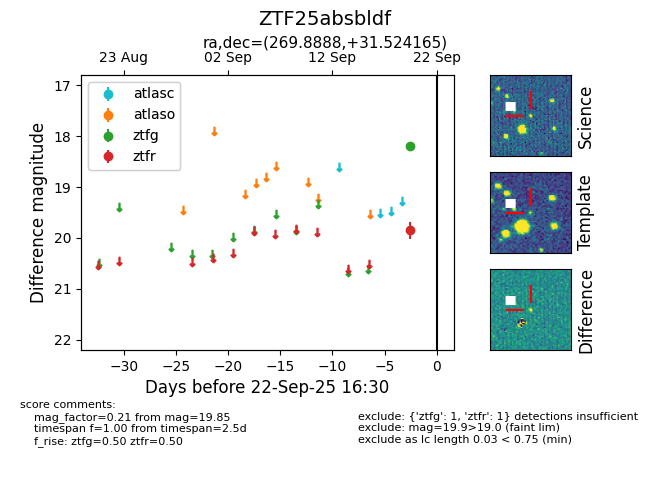

FINK: ZTF25absbldf
Lasair: ZTF25absbldf
ALeRCE: ZTF25absbldf
ZTF25absbldf (ztf,fink)
equatorial (ra, dec) = (269.8888,+31.52416)
galactic (l, b) = (57.4055,+24.12280)

last ztfg=18.19, ztfr=19.85
1 ztfg, 1 ztfr detections